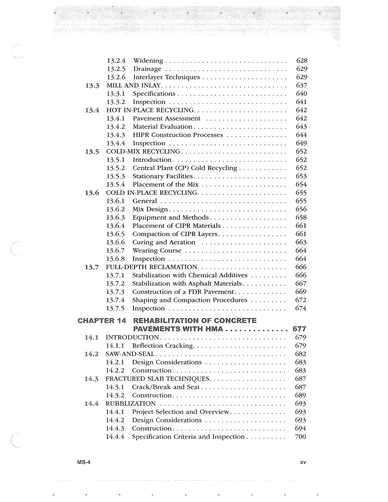

PDF page 17


Searchable transcription
Unproofread OCR · 293 detected words; mean OCR confidence 59.76. Check technical values, symbols and table columns against the scan.
13.3
13.4
13.5
13.6
13.7
14.1
14.2
14.3
14.4
13.2.4 Widening............. 0.0.0.0 eee eee 628 13.2.5 Drainage .......... 0.2.0.0... eee ee eee 629 13.2.6 Interlayer Techniques ..................0.. 629 MILL AND INLAY... 0.200000 00 ce ee 637 13.3.1 Specifications .......... 0.00.00 00 00 eee 640 13.3.2 Inspection ............ 0000. eee eee 641 HOT IN-PLACE RECYCLING. ......0.0.0.0..... 00200005 642 13.4.1 Pavement Assessment ..............0.005. 642 13.4.2 Material Evaluation...........0.......0205. 643 13.4.3 HIPR Construction Processes ............... 644 13.4.4 Inspection ....... 0.0... cee eee ee eee 649 COLD-MIX RECYCLING......0.0.0.0.0 0.000000 eee eee 652 13.5.1 Introduction.......0..0.0.0 00000000 eee eee 652 13.5.2 Central Plant (CP) Cold Recycling. ........... 652 13.5.3 Stationary Facilities... ...............0005. 653 13.5.4 Placement of the Mix ................0000. 654 COLD IN-PLACE RECYCLING. ......0.0.0 0000000 ee eee 655 13.6.1 General... 0... ee 655 13.6.2 Mix Design. ........ 0.0.0. 656 13.6.3. Equipment and Methods................... 658 13.6.4 Placement of CIPR Materials................ 661 13.6.5 Compaction of CIPR Layers................. 661 13.6.6 Curing and Aeration ................0004. 663 13.6.7 Wearing Course ............ 0000 eee eee 664 13.6.8 Inspection ......... 0.0.0.0. eee eee 664 FULL-DEPTH RECLAMATION. ..............2020005 666 13.7.1 Stabilization with Chemical Additives ......... 666 13.7.2 Stabilization with Asphalt Materials........... 667 13.7.3. Construction of a FDR Pavement............. 669 13.7.4 Shaping and Compaction Procedures ......... 672 13.7.5 Inspection ...........0 20000 eee eee 674 CHAPTER 14 REHABILITATION OF CONCRETE
PAVEMENTS WITH HMA . 2.0222 s en nnne 677 INTRODUCTION... 0.0.0.0. .000 000 ee ee 679 14.1.1 Reflection Cracking..................00004. 679 SAW-AND-SEAL. 0 0. eee 682 14.2.1 Design Considerations .................00. 683 14.2.2 Construction... 2.0.0. ce ee 683 FRACTURED SLAB TECHNIQUES. .................0. 687 14.3.1 Crack/Break and Seat........... 00.00.0005 687 14.3.2 Construction... 2.0.00. es 689 RUBBLIZATION ....0..0.0.0.0 0.0002 eee 693 14.4.1 Project Selection and Overview.............. 693 14.4.2 Design Considerations ..................-. 693 14.4.3 Construction........0..0.. 0.0000 694 14.4.4 Specification Criteria and Inspection.......... 700 XV
MSs-4